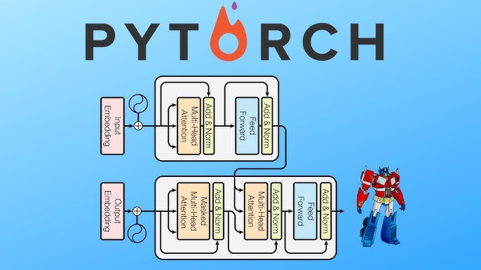
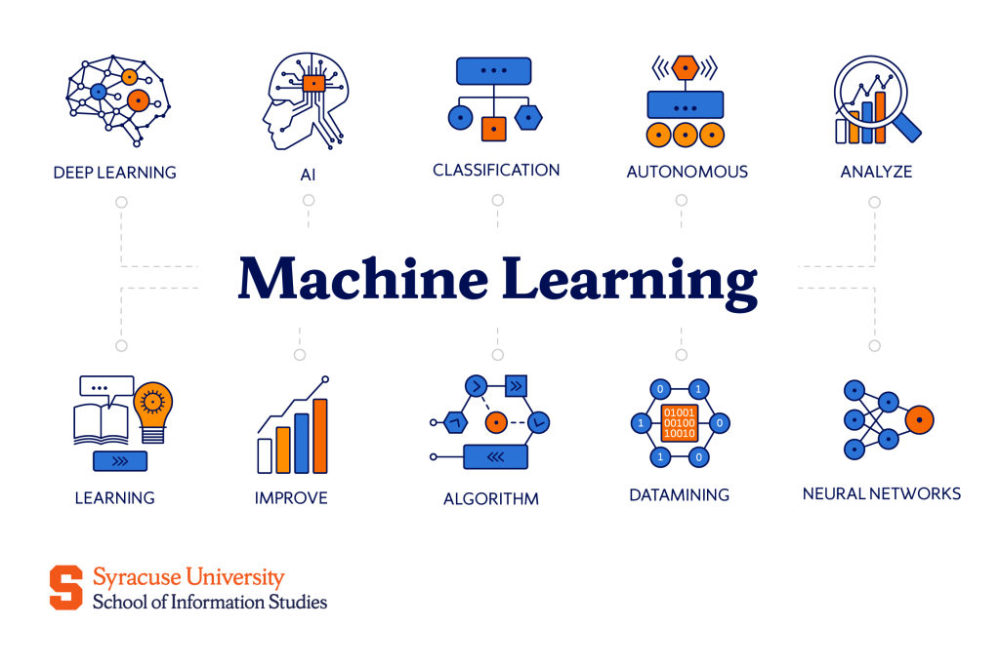

Featured Projects

CMOS Digital Circuit Design Using Cadence Virtuoso
Semi-custom CMOS implementations of fundamental digital circuits, designed and analyzed in Cadence Virtuoso. The project covers transistor-level schematics, physical layouts, DRC/LVS verification, parasitic extraction, and post-layout simulation for logic gates and a 2:1 multiplexer.

EchoSignRealTime
An ESP32-based sign language recognition system that combines flex-sensor and IMU readings with KNN classification. Predictions are sent to a web interface with 3D hand visualization and text-to-speech, with both single-gesture and four-second sentence modes.

PyTorch Transformer Implementation
A PyTorch implementation of the Transformer architecture from "Attention Is All You Need," covering scaled dot-product and multi-head attention, positional encoding, and feed-forward layers for sequence modeling.
